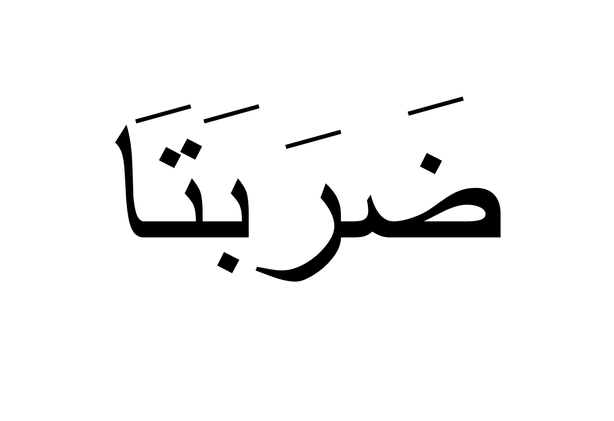

The words taught in previous lectures are tenses and words to describe someone / something. But how to use pronouns i.e. He, She, and They in arabic. For that we use:
| Verbs | Meaning |
|---|---|
| He beated (Male) | |
| They both beated (Male) | |
| They all beated (Male) | |
|
She beated (Female) |
|  | They both beated (Female) |
| They all beated (Female) | |
|
You beated (Male) |
| You both beated (Male) | |
| You all beated (Male) | |
|
You beated (Female) |
| You both beated (Female) | |
| You all beated (Female) | |
|
I beated (Female & Male both) |
| We beated (Female & Male both) |
Exercise: Covert all below words into all 14 types of pronouns:
| Past Tenses | ||||
|---|---|---|---|---|
 |
 |
 |
 |
 |
 |
 |
 |
 |
|
Note: These pronouns are very important as they are used many times in the Holy Quran. Make sure you have strong grip on these before you proceed.
Practice pronouns as much as possible as these are used very much in the Quran. Practice more by converting past tenses words of all shapes mentioned in previous lectures.
Congragulations! You have completed your sixth day task. Revise thoroughly what we have taught you above. These are not all the words in the Quran. These are a few words we have chosen as an example so that you can have a know how they are used.